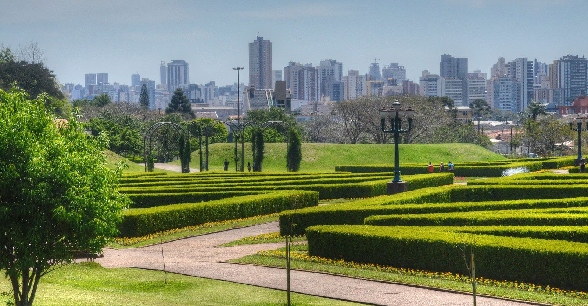
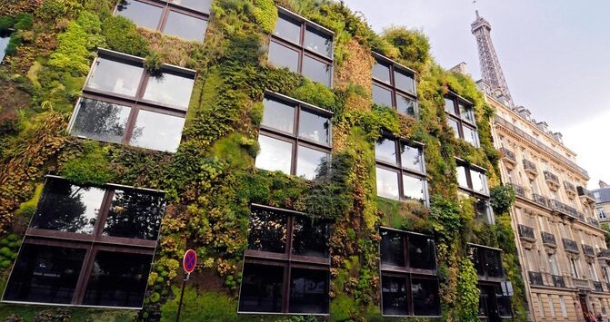

| A great way to get involved in SDGs 9 and 11 is to learn about them. Using the sources in the further reading page of this website are great tools to obtain an understanding and follow the news of the SDGs; knowing more about the strategies and progresses of goals 9 and 11 will help in keeping up with them and their implimentation. |  |
|  | A good way to take action for goals 9 and 11 is to share them. Propagating the targets of the two SDGs, through explaining them or giving others resources like this website, helps in their consideration and promotes their sustainable practices. |